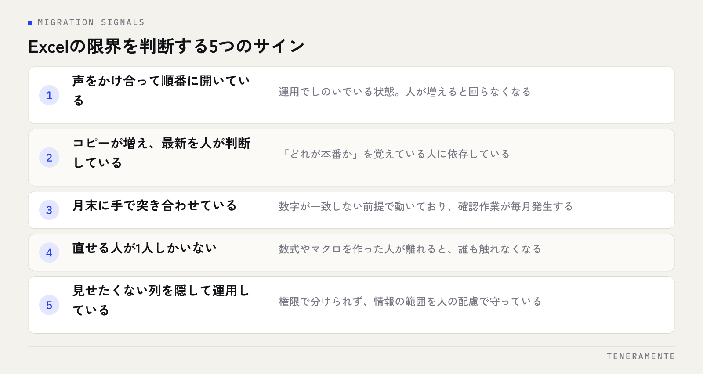

ファイルを開いたら「読み取り専用で開きますか」と聞かれる。保存しようとしたら別名で保存される。先週直したはずの数字が元に戻っている。Excelの共有・同時編集の限界は、機能が足りないというより、複数人が同時に触る前提で作られていないところに無理をかけている状態です。壊れてから慌てるより、どこで判断するかを先に決めておくほうが安全です。
📌 この記事の結論
移行を判断する分かれ目は、ファイルの大きさや人数ではなく「人が気をつけていないと壊れる状態になっているか」です。声をかけ合って順番に開く、バックアップを自分で取る、月末に手で突き合わせる。こうした運用でもっている場合、限界はすでに来ています。
01Excelの共有・同時編集で起きることは、だいたい決まっている
複数人でExcelを共有していて出てくる不具合は、現場が違っても似ています。先に並べておきます。
- 誰かが開いたままで、他の人が編集できない（読み取り専用でしか開けない）
- 同じファイルのコピーが複数でき、どれが最新か分からなくなる
- 同時に保存して、片方の変更が消える
- 行の挿入や並べ替えで、数式の参照先がずれる
- 共有フォルダ上で開いていて、ファイルが壊れて開けなくなる
- 誰がいつ何を直したのか分からず、間違いの原因をたどれない
どれも操作の失敗のように見えますが、原因は使う人の注意力ではなく、ファイルを単位にして共有している構造にあります。注意で防ごうとすると、人が増えたときに必ず破れます。
02なぜ壊れるのか：ファイル単位で持ち回る構造
Excelのファイルは、1つのかたまりとして保存されます。開くときはその全体を読み込み、保存するときは全体を書き戻します。この作り自体は、1人が作業するぶんには速くて扱いやすいものです。
ところが複数人が同時に書き戻そうとすると、後から保存したほうの内容で上書きされます。これが「変更が消える」の正体です。ネットワーク越しの共有フォルダ上で開いている場合は、保存の途中で通信が切れるとファイルそのものが壊れることもあります。
対してシステムやデータベースは、データを行ごとに扱い、書き込みが重なったときの順番を仕組みの側で解決します。AさんがB列を直し、同時にBさんがC列を直しても、どちらも残ります。ここがExcelとの根本的な違いで、人数が増えたときの差になります。
「壊れた」より厄介なのは「静かに間違う」
ファイルが開けなくなればすぐ気づきます。本当に困るのは、数式の参照先がずれて、もっともらしい数字が出続けている状態です。気づくのは月末や期末で、どこから間違っていたのか追えません。Excelの限界は、止まる形ではなく静かに間違う形で現れます。
03共有のやり方ごとに、どこまでできるか
同じ「Excelを共有する」でも、やり方によってできる範囲が違います。いま自社がどれに当たるかを確かめてください。
| 共有のやり方 | 同時編集 | 主な限界 |
|---|---|---|
| 社内の共有フォルダに置く | できない（先に開いた人が優先） | 開いたままで他の人が編集できない。壊れると復旧が難しい |
| ファイルをメールやチャットで送る | できない | コピーが増え、最新がどれか分からなくなる |
| クラウドストレージ（ブラウザ版） | できる | 重い表や一部の関数・マクロが動かない。履歴はあるが権限は細かく分けにくい |
| クラウドストレージ（デスクトップ版） | 条件つきでできる | 同期のずれで競合コピーができる。オフライン編集と衝突しやすい |
クラウド上での同時編集に切り替えると、不具合の多くは収まります。ただし同時に開けるようになることと、業務に必要な管理ができることは別の話です。誰がどの範囲まで見ていいかを分ける、入力の間違いをその場で止める、承認の段階を持たせる。このあたりはシートの共有では作りきれません。
04移行を判断する5つのサイン
人数や行数で線を引くより、運用の様子で判断するほうが外しません。次のうち複数に当てはまるなら、検討する段階です。

- 声をかけ合って順番に開いている：運用でしのいでいる状態で、人が増えると回らなくなります
- コピーが増え、最新を人が判断している：「どれが本番か」を覚えている人に依存しています
- 月末に手で突き合わせている：数字が一致しない前提で動いており、確認の作業が毎月発生します
- 直せる人が1人しかいない：数式やマクロを作った人が離れると、誰も触れなくなります
- 見せたくない列を隠して運用している：権限で分けられないので、情報の範囲を人の配慮で守っています
逆に、使うのが1〜2人で、集計が目的で、壊れても作り直せるなら、Excelのままが適切です。移行にはお金と時間がかかるので、困っていないものを置き換える必要はありません。判断の考え方はExcel管理の限界とシステム化の判断にもう少し詳しく整理しています。
05Excelのままで、先にやれること
移行を決める前に、Excelの範囲で効く手当てがあります。ここで収まるなら、それがいちばん安く済みます。
まず入力する場所と集計する場所を分けること。1枚のシートで入力も集計もしているから、行の挿入で数式が崩れます。入力用のシートは1行1件の素のデータだけにして、集計は別シートから参照します。
次に入力規則とシートの保護をかけること。日付やコード、選択肢をプルダウンにして、数式の入っているセルは編集できないようにします。これだけで「静かに間違う」はかなり減ります。
そして最新の置き場所を1つに決めること。クラウド上の1ファイルを本番とし、手元にコピーを置かないルールにします。
マクロで固めるのは、慎重に
不便を埋めるためにマクロを足していくと、短期的には楽になりますが、作った人以外が直せないものになります。属人化はExcelの限界そのものより厄介で、移行するときにも中身が分からず作り直しになります。マクロを足す前に、その処理が本当にExcel上にあるべきかを一度考えてください。
06移行するときの順番と、つまずきやすいところ
移行で失敗するのは、たいていいまのExcelをそのまま再現しようとしたときです。長年の例外対応が全部要件に入り、作るものが膨らみます。
順番としては、まず1つの業務に絞ります。いちばん人数が触っていて、いちばん手で突き合わせている業務が候補です。次に、その業務で本当に必要な項目だけを残します。使っていない列、過去の経緯で残っている列は持ち込みません。そのうえで数か月動かし、問題がなければ次の業務に広げます。
データの移し替えは、思ったより手間がかかる部分です。同じ意味の値が「東京都」「東京」「13」と混ざっている、日付が文字列になっている、空欄と0が混在している。ここの整理を先にやっておくと、後の作業が軽くなります。全体の進め方は業務アプリ開発の完全ガイドにまとめています。
07まとめ：限界のサインは「人が気をつけて回していること」
Excelの共有・同時編集の限界は、ファイルを単位にして持ち回る構造から来ています。クラウド上での同時編集に切り替えれば不具合の多くは収まりますが、権限や入力の制御、承認の段階まで必要になると、シートの共有では作りきれません。
判断の基準は人数や行数ではなく、人が気をつけていないと壊れる状態になっているかどうかです。順番に開く、コピーの最新を人が覚えている、月末に手で突き合わせる。これらが日常になっているなら、壊れる前が動くタイミングです。移行するときは1業務に絞り、いまのExcelを再現せず、必要な項目だけで作り直してください。
クラウドのExcelに移せば、同時編集の問題は解決しますか？
何人以上になったら移行を考えるべきですか？
いまのExcelの数式やマクロは引き継げますか？
08次の一歩：いまの困りごとがどちらなのかを分ける
最初に切り分けたいのは、困っているのが「同時に開けない」なのか「管理が足りない」なのかです。前者ならクラウド化で収まります。後者なら、どの業務から作り直すかを決める話になります。
TENERAMENTEなら、いまお使いのExcelをもとに、同時に入力しても消えない・見せる範囲を人ごとに分けられる・入力の間違いをその場で止める業務Webアプリに置き換えられます。順番待ちや月末の突き合わせがなくなり、「壊さないように気をつける」仕事そのものが消えます。小さな試作（PoC）なら最短2週間で触れる形をご用意でき、初期費用は30万円からです。詳しくは業務Webアプリ開発のページをご覧のうえ、「うちのExcelの場合は？」という段階でもお問い合わせからお気軽にご相談ください。